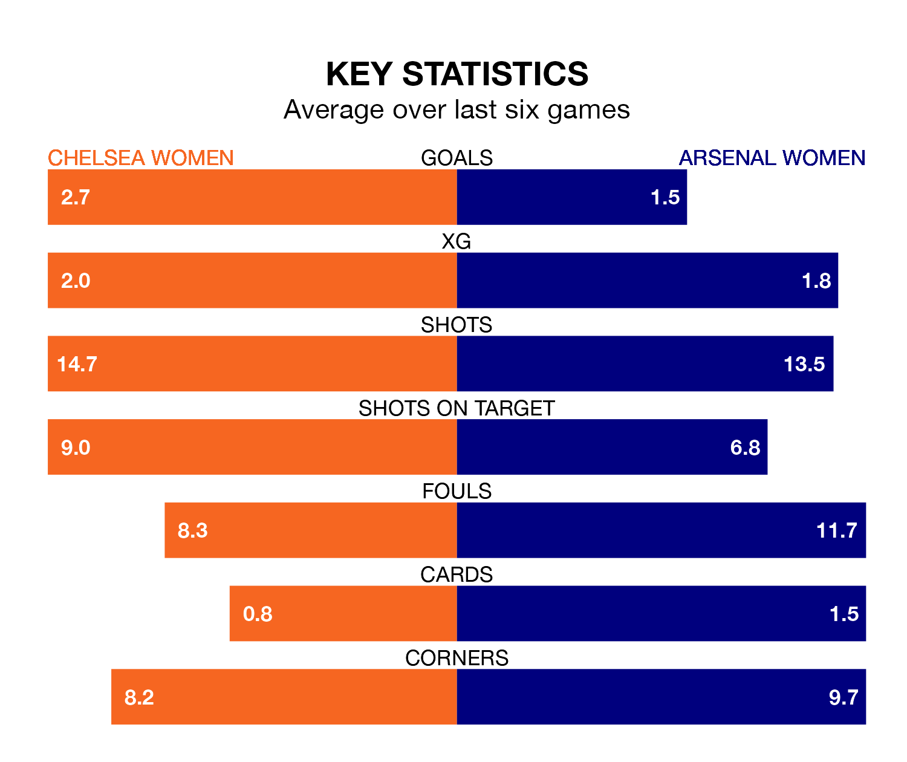

Two of the FA Women's Super League's top sides face each other at Kingsmeadow in Friday's late kick-off, when table-topping Chelsea Women host third-placed Arsenal Women.
Chelsea have picked up 12 wins and one draw from 15 games so far this season, and sit three points above the visitors going into the 7pm match.
The Gunners, meanwhile, have won 11 and drawn one, picking up 34 points.
With 45 goals in 15 games so far this season, Chelsea are the league's highest scorers with 3.0 goals per game. And they are conceding fewer than average, letting in 13 goals at a rate of 0.9 per game.
Arsenal are also above average scorers, with 2.2 goals per game, compared to a league average of 1.7. They have conceded 0.9 goals per game.
In Lauren James, the Blues have one of the league's most on-form strikers so far this season. She has notched 12 goals in 13 appearances, to sit second in the scoring charts.
Her goal rate of one every 80 minutes is much quicker than that of Alessia Russo, the Gunners's top scorer with a goal every 198 minutes, and a total of six goals in 15 games.
In the last 10 years, Chelsea and Arsenal have played each other on 33 occasions. Chelsea won 18 of them, Arsenal eight, and they drew seven times.
On average, the Blues scored 1.7 goals and the Gunners 1.2 in those matches.
Their last meeting was on December 10, when Arsenal won 4-1 at home.
The hosts are in fantastic form in the FA Women's Super League, with five wins and one loss from their last six games.
With four wins and two losses over that period, the away team's form is worse – they have taken 12 points from 18, compared to Chelsea's 15.
Chelsea's last match was on March 3, a 4-0 win against Leicester City WFC, with Catarina Cantanhede Melônio Macário, Johanna Rytting-Kaneryd, Mayra Tatiana Ramírez Ramírez and Nathalie Björn getting the goals for the Blues.
Arsenal beat Tottenham Hotspur Women 1-0 last time out, also on March 3, with Russo on the scoresheet.
Updated: 09:34 (UTC), 08/03/24